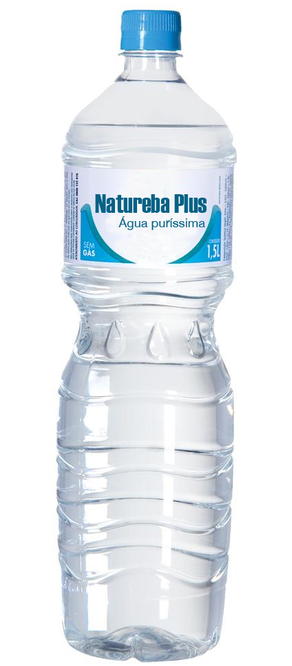
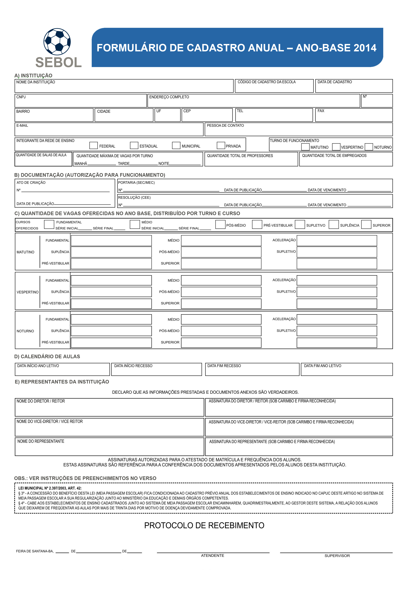
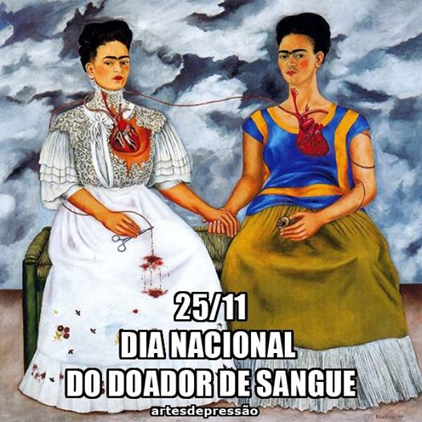

Textos de ligação entre
texto e imagem
-
 As relações que a imagem pode estabelecer com o texto são diversas. As mais importantes são seis:
redundância: quando se verifica uma duplicação entre a imagem e o texto. Ambos têm o mesmo tipo de conteúdo, expressando-o cada um à sua maneira, quer dizer, com as características e os potenciais que possuem de acordo com sua natureza de imagem ou de texto. A imagem somente repete aquilo que já está expresso no texto e vice-versa. Nenhuma informação nova é gerada. A forma mais trivial de redundância, por exemplo, ocorre na publicidade quando aparece no rótulo o nome/tipo do produto. Muitas vezes a redundância ocorre para garantir que a imagem seja, de fato, interpretada sem nenhuma ambiguidade.
-
dominância: fala-se de dominância do texto ou da imagem quando um se sobrepõe ao outro em razão de seu tamanho ou conteúdo informativo. O caso mais evidente de dominância textual é aquele em que a imagem é minimizada. A dominância do texto sobre a imagem também é detectada quando aquele contém muito mais informações do que esta.
-
 A imagem terá, então, uma função ilustrativa e estará em segundo plano.
A imagem terá, então, uma função ilustrativa e estará em segundo plano. No caso contrário, o da dominância imagética, a imagem contém mais informações do que o texto, ou seja, a imagem domina, relegando o texto a um plano de menos importância.
complementaridade: ambos, texto e imagem, se complementam. Há uma distribuição equitativa da informação. Tanto o texto como a imagem são necessários para o entendimento geral da mensagem. A imagem preenche uma lacuna do texto e vice-versa. Veja este exemplo.
-
discrepância ou contradição: quando não há uma relação reconhecível entre a imagem e o texto, ou até mesmo quando a imagem contradiz o texto e vice-versa. Nesse caso, apesar de o texto e a imagem estarem lado a lado, não aparece uma conexão evidente entre ambos. O leitor busca a conexão e não consegue encontrá-la de imediato. Muitas vezes, a contradição ocorre porque o emissor da mensagem pretende levar o receptor a pensar em uma conexão não evidente.
redimensionamento:ocorre quando a dimensão esperada de uma imagem ou de um texto é hipertrofiada, quer dizer, é engrandecida de tal forma que pode chegar até mesmo a perder qualquer efeito de realidade. Trata-se de um tipo de relação que apresenta alguma similaridade com a dominância. Entretanto, nesta, o que ocorre é um desequilíbrio na equivalência dos espaços ocupados pelo texto e pela imagem, enquanto no redimensionamento texto ou imagem adquirem características quase fantasmagóricas.
-
 ressignificação: realiza um processo de transformação do significado da imagem e/ou do texto. Ambos estão lado a lado ou em qualquer outra posição no espaço, porém o texto pode provocar outro entendimento da imagem ou vice-versa. Muitas vezes, esse processo de ressignificação acorda significados que estariam contidos na imagem ou no texto, mas é apenas a referência de um em relação ao outro que faz o novo sentido emergir.
Essas são as relações que serão estudadas por meio de exemplos com os respectivos guias para observação e desenvolvimento de habilidades de leitura da imagem nos intercâmbios que estabelece com o texto.